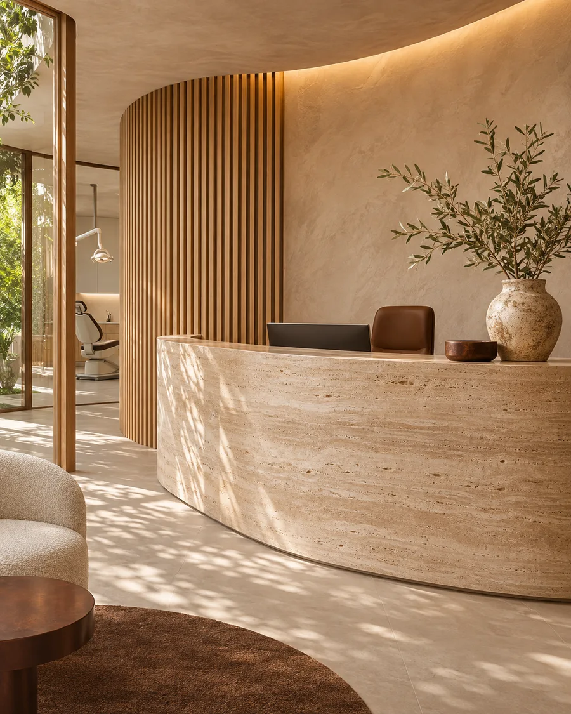

Acreditamos que o cuidado odontológico começa pela escuta, pelo respeito e por uma experiência
construída em torno de cada pessoa.
01
Atendimento humanizado
Atenção individualizada em cada etapa.
02
Planejamento cuidadoso
Orientações e possibilidades de tratamento avaliadas conforme cada necessidade.
03
Ambiente acolhedor
Um espaço pensado para transmitir conforto e tranquilidade.

02 / A CLÍNICAIMAGEM CONCEITUAL
Conheça a AURA
Um espaço pensado para você se sentir bem.
Do primeiro contato à avaliação, o conceito AURA propõe um atendimento com tempo para ouvir, esclarecer
dúvidas e conversar sobre as possibilidades de cuidado.
A luz natural e os materiais quentes traduzem essa mesma atenção ao ambiente.
Conheça áreas de cuidado que podem compor um planejamento individualizado. Serviços ilustrativos para esta
demonstração.
01
Odontologia preventiva
Acompanhamento da saúde bucal e orientações para o cuidado diário.
Saiba mais
O acompanhamento preventivo pode incluir avaliação da saúde bucal, revisão dos hábitos de higiene e
orientações para a rotina. A frequência e as etapas são definidas durante a avaliação.
Informações sobre técnicas de clareamento e critérios de avaliação.
Saiba mais
O clareamento envolve técnicas para modificar a tonalidade dos dentes naturais. A avaliação ajuda a
conversar sobre possibilidades, limitações e cuidados conforme as características de cada pessoa.
Avaliação do alinhamento dos dentes e da relação entre as arcadas.
Saiba mais
A ortodontia abrange a avaliação da posição dos dentes e da mordida. A conversa com o profissional pode
incluir opções de aparelhos, acompanhamento e etapas do planejamento.
Avaliação de possibilidades de reabilitação com implantes dentários.
Saiba mais
Implantes podem fazer parte de um planejamento para a reabilitação de dentes ausentes. A avaliação
considera a saúde bucal, o histórico de saúde e as particularidades de cada pessoa.
Planejamento de recursos protéticos de acordo com cada necessidade.
Saiba mais
A prótese dentária reúne possibilidades para substituir ou restaurar estruturas dentárias. A escolha
depende da avaliação, das condições bucais e dos objetivos discutidos com o profissional.
Avaliação de aspectos como forma, proporção e cor dos dentes.
Saiba mais
A avaliação estética considera as características dos dentes e a saúde bucal. O planejamento pode
abordar forma, proporção e cor de acordo com as possibilidades identificadas na consulta.
Esta demonstração não solicita dados por formulário. Fontes externas podem ser carregadas pelo navegador. Ao
abrir o WhatsApp, o serviço aplica sua própria política de privacidade.